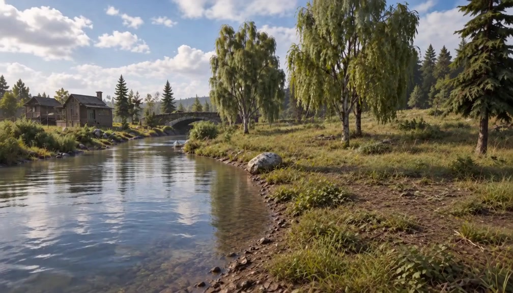
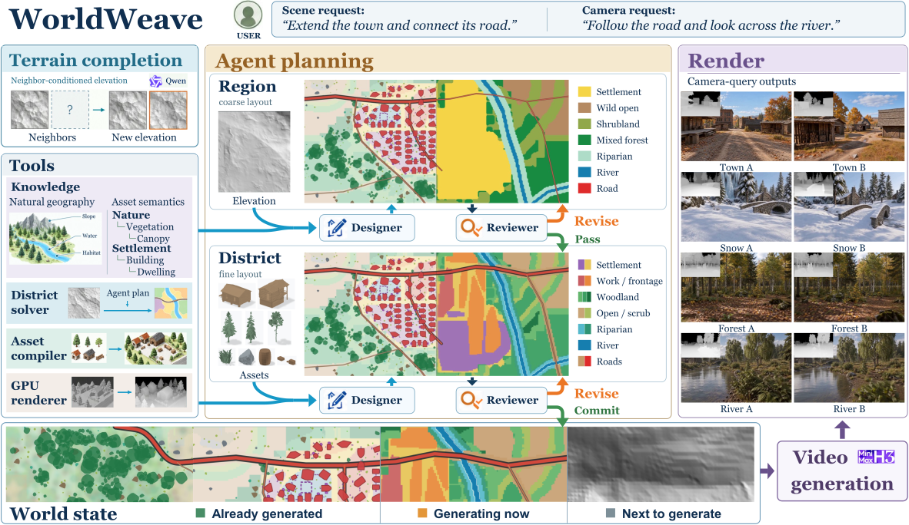
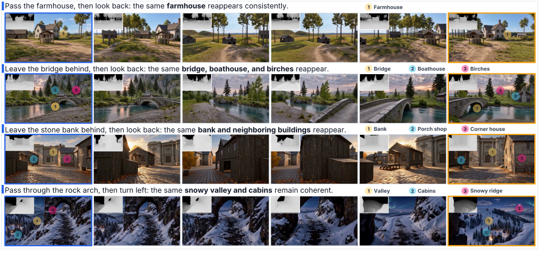

Grow the terrain
Extend metric terrain while matching boundary heights and slopes.
A persistent world, beyond the frame
Build a world that stays.
Generate new views from the same geometry.

01 / The idea
WorldWeave gives video generation an explicit, persistent geometric world: terrain that can grow, scenes that can be planned, and structure that can be revisited.
Despite rapid progress, world models still lack explicit, persistent structural memory, making it difficult to preserve consistent world structure during continual scene expansion and cross-view revisits. To address this limitation, we present WorldWeave, a world generation framework that decouples world-state maintenance from visual rendering. Specifically, WorldWeave combines continual elevation-map generation with agent-guided scene organization and stitching to build an expandable explicit 3D world that incrementally extends structural memory while preserving existing structure. First, its terrain module uses diffusion-based image outpainting to generate continuous metric elevation maps under neighborhood conditioning and boundary constraints. Next, an agent integrates user intent, terrain evidence, and cross-region connectivity constraints to construct scenes through hierarchical semantic planning, deterministic geometry compilation, and local revision. Finally, during visual generation, planned camera trajectories query world geometry through a read-only interface, producing depth sequences that guide video synthesis without writing the generated results back into the world state. As a result, structural memory remains independent of short-window video generation, enabling continual expansion without predefined map boundaries and providing a consistent geometric basis for observations across trajectories and repeated visits.

02 / Explore the worlds
Continuous exploration within the same scene.
Compare the methods
Select a first frame to compare the same task across eleven methods.
The first frame is the task reference, not an input shared by every model. Conditioning differs by method; text-only baselines receive the prompt. These are the existing evaluation clips, including the benchmark's original temporal normalization. Web encoding adds no timing changes.
Shared geometry across changing observations.

03 / How it works
A persistent spatial state, separate from generated appearance.
Extend metric terrain while matching boundary heights and slopes.
Use hierarchical agent planning and geometric checks to organize the world.
Read depth from the scene to guide video. Generated RGB never writes back into the geometry.

04 / Evaluation
Visual quality, memory, camera control and structural consistency.
| Method | Visual quality | Memory & camera control | Structural consistency | |||||
|---|---|---|---|---|---|---|---|---|
| Imaging quality ↑ | Aesthetic quality ↑ | Structural memory ↑ | Camera compliance ↑ | MN-MS ↑ | MC-GeCo ↓ | MC-MEt3R ↓ | MC-GeoCon ↓ | |
| SANA-WM | 0.739 | 0.619 | 0.328 | 55.5 | 0.973 | 0.113 | 0.203 | 0.189 |
| Zing | 0.763 | 0.685 | 0.989 | 55.8 | 0.974 | 0.0698 | 0.129 | 0.142 |
| SolarWM-5B | 0.755 | 0.604 | 0.370 | 54.7 | 0.956 | 0.0786 | 0.166 | 0.217 |
| AlayaWorld | 0.784 | 0.641 | 1.51 | 56.4 | 0.896 | 0.926 | 0.239 | 0.295 |
| EVOKE-Turbo | 0.784 | 0.718 | 1.12 | 61.6 | 0.961 | 0.105 | 0.182 | 0.249 |
| Echo-WM | 0.791 | 0.655 | 2.21 | 63.5 | 0.968 | 0.0604 | 0.135 | 0.135 |
| Seedance 2.0 | 0.717 | 0.617 | 2.14 | 69.8 | 0.980 | 0.101 | 0.170 | 0.307 |
| Wan3.0 | 0.786 | 0.702 | 1.63 | 59.1 | 0.938 | 0.146 | 0.184 | 0.131 |
| Kling 3.0 | 0.739 | 0.588 | 2.09 | 59.3 | 0.978 | 0.0745 | 0.155 | 0.163 |
| MiniMax-H3 (Base) | 0.725 | 0.617 | 0.438 | 50.8 | 0.979 | 0.0633 | 0.140 | 0.178 |
| WorldWeave | 0.781 | 0.704 | 2.30 (+426.7%) | 72.3 (+42.2%) | 0.981 | 0.0573 | 0.122 | 0.121 (-32.2%) |
The first six baselines are open-source world models; the remaining baselines are video models. Bold and underline indicate best and second-best scores. Highlighted gains are relative to MiniMax-H3 (Base). Evaluation covers 120 tasks, with structural memory measured on the common 48 applicable tasks.
@article{huang2026worldweave,
title={WorldWeave: Growing Persistent Geometric Worlds
for Video Generation},
author={Huang, Yifan and Jiang, Lifan and Hao, Qingyue
and Chen, Cheng and Wu, Boxi and Ren, Xiaoxue
and He, Xiaofei and Zhao, Dehai},
journal={arXiv preprint arXiv:2609.34221},
year={2026}
}